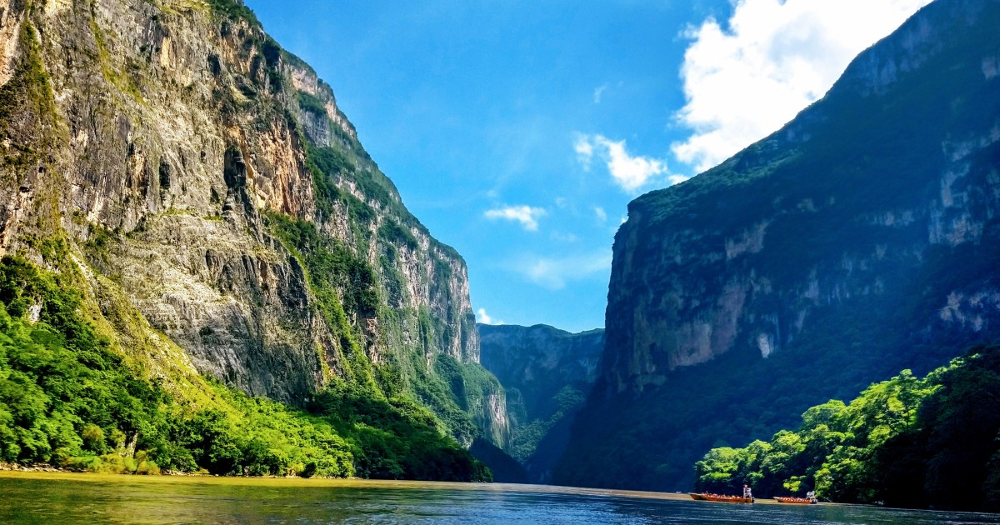
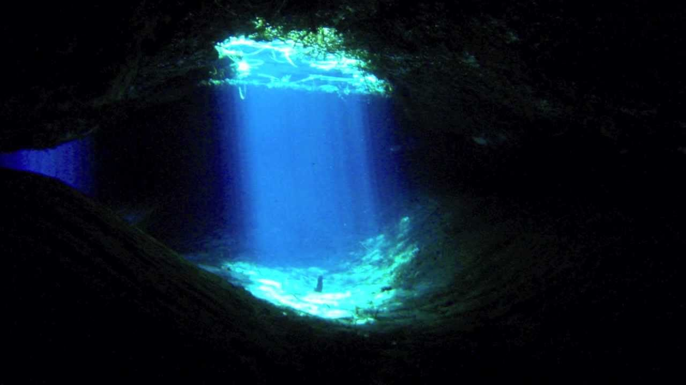

TURISMO DE LA HUASTECA
El turismo de la Huasteca ha hecho muchas visitas en diferentes lugares del pais Mexicano, entre los que destacan algunas imagenes de sus visitas mas espectaculares , Febrero 28, 2020

El cañon del Sumidero
Un poco sobre...
El Cañon del sumidero para pasar un visita familiar en el yate para ver sus espectadores vistas de las sierras que se encuentran en cada lado del río.
LUGARES TURISTICOS DE LA HUASTECA
Las visitas en los lugares de la Huasteca comenzando desde la puerta grande de la Huasteca Potosina Cd Valles, Octubre 20, 2020

Vista dentro de la cueva Aquismon, San Luis Potosi.
Un poco mas sobre la visita de la media luna..
La media luna un lugar turistico dentro de la Huasteca Potosina en el que se puede visitar varios lugares como lo es el sotano de las golondrinas, el sotano de las Huahuas en Aquismon; Las pozas de Xilitla; El nacimiento en Huichihuayan, la Poza del mono en Tandzumadz Huehuetlan, San Luis Potosi.